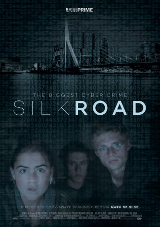

#7654 Silk Road - Könige des Darknets
 gesehen am 16.12.2017
gesehen am 16.12.2017
 
 IMDB-Wertung: 6.1 / 10
IMDB-Wertung: 6.1 / 10  Metascore: 0
Metascore: 0 
When a 20-year old girl meets the charismatic boy living across the street, it starts her on the road to becoming a successful drug dealer on Silk Road. Along the way she gets caught up in a dangerous cat-and-mouse game played by police, criminals, and her own boyfriend. How far will she go? Who can she trust - and just who is using who?
Jahr: 2017
Dauer: 89 Minuten
FSK: 12
Land: Niederlande Studio: Concorde Home EntertainmentTonspuren:
Untertitel:
Auflösung: 1080p (1920x1040) Größe: 6287 MB
Genre: Thriller, Drama, Krimi, Liebe
Regisseur: Mark de Cloe
Drehbuch: Sacha Gertsik
Soundtrack: David van der Heyden
Darsteller:
- Gijs Blom als Raymond
 Marcel Hensema als Vader Daphne
Marcel Hensema als Vader Daphne- Melody Klaver als Agnes
- Majd Mardo als Joris Huizinga
- Olivia Lonsdale als Daphne
- Jonas Smulders als Sem
- Phi Nguyen als Jimmy
- Ronald Top als Gert Tiggelman
- Nienke van Hofslot als Josefien
- Marloes van den Heuvel als Iris
- Bart Harder als Mick
- Boy Ooteman als Kidnapper
- Boyd Grund als Hitman
- Fleur Voorn als Waitress
- Fabiola Veerman als Journalist
- Howard van Dodemont als Teacher 1
- Oscar Hoffmans als Teacher 2
- Daniel Schoemaker als
- Boudewijn Scholten als Man in restaurant
- Nick Vorsselman als Neighbor (uncredited)
Datei: X:\2017(N-Z)\Silk Road - Könige des Darknets (2017, FSK, 1920x1040).mkv seit 29.11.2017
Festplatte: HD 2017(A-Z)-2018(A-F)
 Es gibt insgesamt 170 Filme in der Gruppe '2017(N-Z)'
Es gibt insgesamt 170 Filme in der Gruppe '2017(N-Z)'